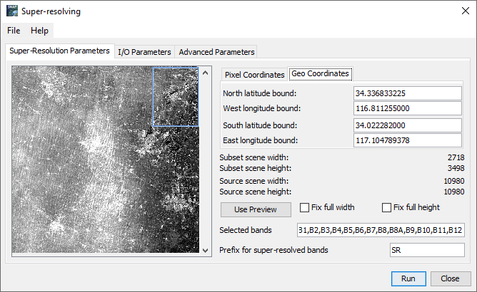
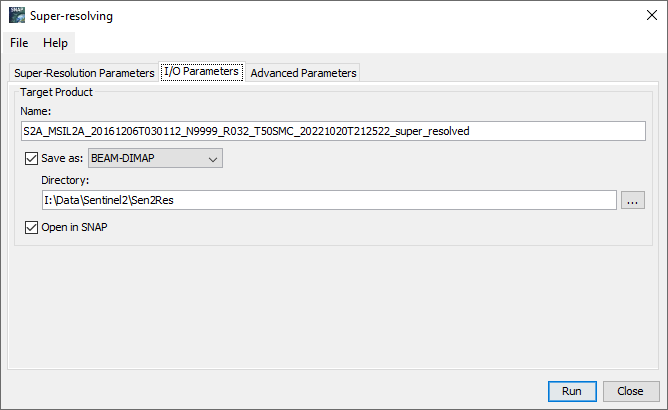
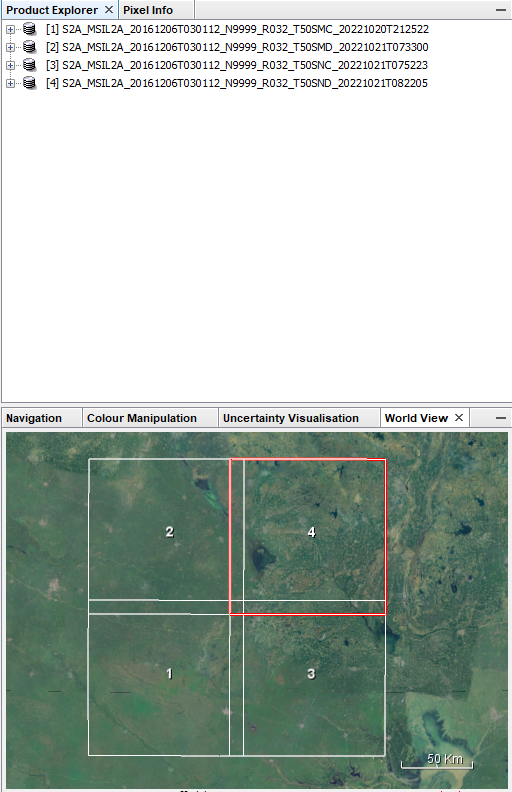

Land Cover Classification using Sentinel2 and Deep Learning
Intro
This post is about getting to know LULC classificaiton using Sentinel 2 based on deep learing.
Sentinel 2
Sentinel-2 is a mission of two twin satellites, promoted by the European Space Agency, travelling around the Globe, completing a full circle every ten days. The two satellites are flying in the same orbit but phased at 180°, which means that they co-operate to provide freshly captured imagery every five days. One is called S2A and its twin is called S2B1!
Data Download
1 | |
Download with aria2c
-
download
product.meta4 -
cdto the folder that you want to place -
aria2c --http-user=mengyuchi --http-passwd=5212109mengle --check-certificate=false --max-concurrent-downloads=2 -M products.meta4
Download with python
-
Setup python environment for python
-
Open
Anaconda powershell prompt, installsentinelsatpackage4
1 | |
Sen2Cor
Sen2Cor in SNAP
-
Unzip Sentinel2 file
-
Install Sen2Cor in SNAP Tools
-
Optical\Thematic Land Processing\Sen2Cor
-
I\O Parameter: Select .xml file in
D:\Data\Sentinel2\xuzhou\Original\S2A_MSIL1C_20161206T030112_N0204_R032_T50SMC_20161206T030749.SAFE\MTD_MSIL1C.xml -
Processing Parameter: Resolution → All
-
Wait for processing
Sen2Cor in cmd
-
Download Sen2Cor v2.10
-
Unzip
-
Open
dirin command prompt -
Copy Sentinel2 L1C data file path
L2A_Process.bat I:\Data\Sentinel2\xuzhou\L1C\S2A_MSIL1C_20200320T025541_N0209_R032_T50SMC_20200320T060846.SAFE -
Run command
L2A_Process.bat I:\Data\Sentinel2\xuzhou\L1C\S2A_MSIL1C_20200320T025541_N0209_R032_T50SMD_20200320T060846.SAFE -
Wait around 10 mins.
-
Check results in SNAP or QGIS.
Sen2Cor using bat script
-
Create new
txtfile in folderE:\Code\Sentinel2_L1C_to_L2A -
Copy these code in
txtfile
1 | |
-
Save as
Sen2cor_weak.bat -
Open
Windows powershell,cdto DirE:\Code\Sentinel2_L1C_to_L2Aand run./Sen2cor_weak.bat -
Error
Sen2cor 2.10.01 - Product metadata file cannot be read with 14.2 baseline L1C
The solution to this error: using
Sen2Cor-2.05.05-win64to process sentinel 2 data that produced before 20176.
- Output
dirfor data before 2017 isE:\DATA\LULC\Sentinel2\L1C\Before_2017, and outputdirfor data after 2017 isE:\DATA\LULC\Sentinel2\L2A
Sen2Res in SNAP
- Get
ExtentofAOIinArcGIS
- Extent for
Xuzhou_centerin deg
1 | |
- Extent for
feng_peiin deg
1 | |
Geo Coordinatessetting:
1 | |
Code for
subset
1 | |
-
Raster→subset -
Optical→Sentinel2 super-resolution -
Edit
Geo Coordinates,I/O Parameters → Directoryin panel


-
Run, this would take a while
-
Total time spend for processing: 01:48:46.160
Mosaic
- Raster → Geometric → Mosaicking
Subset in SNAP
Due to long processing time of Sen2Res, we have to clip our original L2A product into sub-areas2. We use subset tool in SNAP for this process.
- Open multi L2A products in SNAP.

Raster→Subset
Using SNAP-GPT tool to process Sentinel2 data
Setup
GPT for Resampling and subset
LULC classification using lstm-sentinel2-landcover
Code for Deep Learning for Land Cover Change Detection5
Python environment setup
-
conda create -n n_env_py37 python=3.7 -
conda activate n_env_py37 -
cdto folderC:\Users\mengy\Documents\VS workspace\LSTM_Sentinel2_land_cover\lstm-sentinel2-landcover -
conda config --env --add channels conda-forgepip install numpy -
conda install -c conda-forge fire -
conda create -n tf tensorflowconda activate tf -
conda install -c conda-forge segmentation-models-pytorch -
conda install -c conda-forge scikit-learn -
conda install -c conda-forge scikit-image -
conda install -c conda-forge tqdm -
conda install -c conda-forge gdal -
conda install -c conda-forge rasterio
Data preparation and placement
-
Sentinel images:
data/raw/sentinel/ -
Ground Truth shapefile:
data/raw/ground_truth/gt_shapefile/ -
shapefile of area of interest (AOI) = shape of GT as shapefile:
data/raw/ground_truth/overallshape/
Pre-processing
Example models are in src/models/, the data generators used for training are in src/helpers/image_functions.py.
-
baseline_cnn.pyis a simple FCN that trains on single images at a time (i.e. no sequences). It can be used as a pretrained base model for the LSTM models, as shown in e.g.lstm_fixed_seq.py. -
lstm_fixed_seq.pyis a FCN+LSTM that trains with sequences of images, however the images that build the sequence are fixed (``. -
lstm_random_seq.pyis also a FCN+LSTM that randomly builds a new sequence of images for each training batch.
Trained models are saved in models/. Tensorboard logs are saved in separate subdirectories of reports/logs/; this way they can be called via tensorboard --logdir=reports/logs (when in main directory).
Sentinel-2 10 m Land Use/Land Cover Time series Downloader
This application provides access to individual 10-meter resolution GeoTIFF scenes for all land masses on the planet, for each year from 2017-20213.
All scenes for each year are also available to download as a zip file: 2017, 2018, 2019, 2020, 2021.
Each annual zip download is approximately 60 GB of global extent.